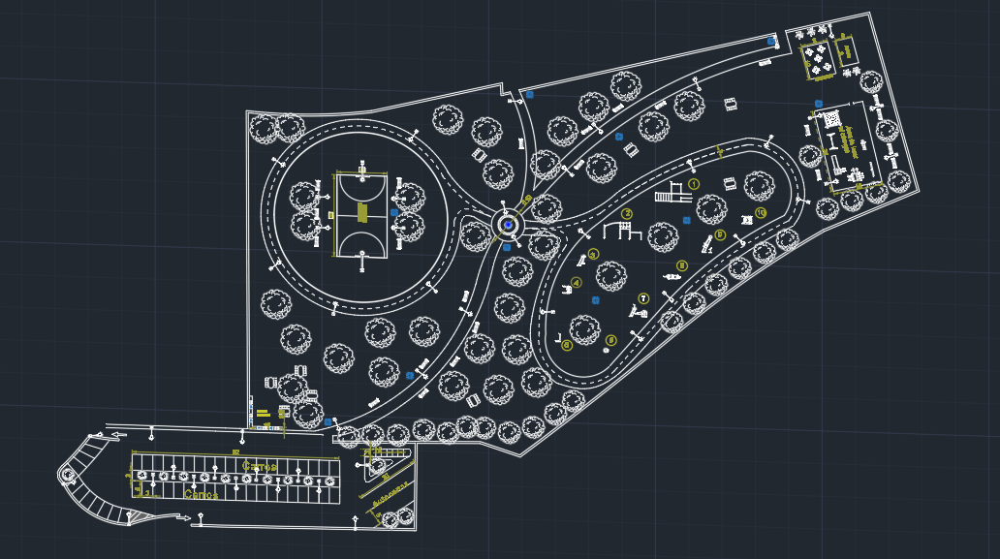
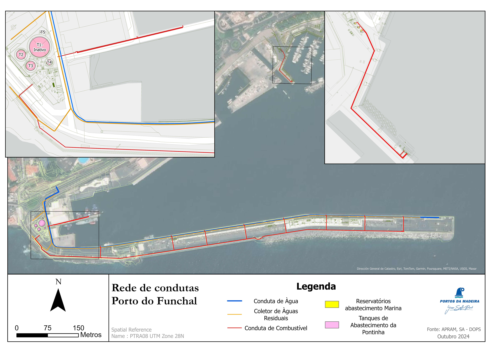

Formação
Setembro 2023 - Presente
Faculdade de Letras - Universidade do Porto. Porto, Portugal
Mestrado em Sistemas de Informação Geográfica e Ordenamento do Território
Setembro 2019 - Junho 2023
Faculdade de Ciências e Tecnologia - Universidade dos Açores. São Miguel, Portugal
Licenciatura e Proteção Civil e Gestão de Riscos
Fevereiro 2023 - Junho 2023
Faculdade de Ciências e Tecnologia - Universidade dos Açores. São Miguel, Portugal
Unidade Curricular Isolada - Ecotoxicologia
Sítio: Universidade dos Açores
Alguns dos meus trabalhos
Diagnóstico Espacial: Aptidão para assistência médica na ilha da Madeira
Análise Espacial, MSIGOT
Rodrigo Sousa
Maio 2024
Simulação Hec-RAS: Análise de Suscetibilidade de Risco de Aluviões - Ribeira dos Socorridos
Cartografia de Riscos, MSIGOT
Rodrigo Sousa
Junho 2024
Outros Layouts
- Trabalho/Proposta CAD para a urbanização do Parque de Francos ↓
- Planificação da rede de abastecimentos de combustível e água para o Porto do Funchal ↓

